Solve Geometry Applications: Triangles, Rectangles, and the Pythagorean Theorem
Solve Applications Using Properties of Triangles
In this section we will use some common geometry formulas. We will adapt our problem-solving strategy so that we can solve geometry applications. The geometry formula will name the variables and give us the equation to solve. In addition, since these applications will all involve shapes of some sort, most people find it helpful to draw a figure and label it with the given information. We will include this in the first step of the problem solving strategy for geometry applications.
We will start geometry applications by looking at the properties of triangles. Let’s review some basic facts about triangles. Triangles have three sides and three interior angles. Usually each side is labeled with a lowercase letter to match the uppercase letter of the opposite vertex.
The plural of the word vertex is vertices. All triangles have three vertices. Triangles are named by their vertices: The triangle in Figure 1 is called
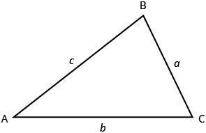
The three angles of a triangle are related in a special way. The sum of their measures is Note that we read as “the measure of angle A.” So in in Figure 1,
Because the perimeter of a figure is the length of its boundary, the perimeter of is the sum of the lengths of its three sides.
To find the area of a triangle, we need to know its base and height. The height is a line that connects the base to the opposite vertex and makes a angle with the base. We will draw again, and now show the height, h. See Figure 2.
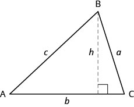
The measures of two angles of a triangle are 55 and 82 degrees. Find the measure of the third angle.
Solution
Solution
| Step 1. Read the problem. Draw the figure and label it with the given information. | 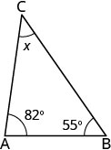 |
| Step 2. Identify what you are looking for. | the measure of the third angle in a triangle |
| Step 3. Name. Choose a variable to represent it. | Let the measure of the angle. |
| Step 4. Translate. | |
| Write the appropriate formula and substitute. | |
| Step 5. Solve the equation. | |
|
Step 6. Check. |
|
| Step 7. Answer the question. | The measure of the third angle is 43 degrees. |
The perimeter of a triangular garden is 24 feet. The lengths of two sides are four feet and nine feet. How long is the third side?
Solution
Solution
| Step 1. Read the problem. Draw the figure and label it with the given information. |
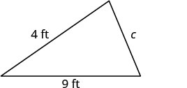 |
| Step 2. Identify what you are looking for. | length of the third side of a triangle |
| Step 3. Name. Choose a variable to represent it. | Let the third side. |
| Step 4. Translate. | |
| Write the appropriate formula and substitute. | 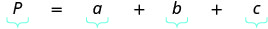 |
| Substitute in the given information. | 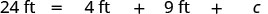 |
| Step 5. Solve the equation. |
|
|
Step 6. Check. |
|
| Step 7. Answer the question. | The third side is 11 feet long. |
The area of a triangular church window is 90 square meters. The base of the window is 15 meters. What is the window’s height?
Solution
Solution
| Step 1. Read the problem. Draw the figure and label it with the given information. |
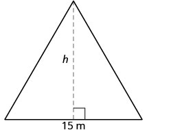 Area |
| Step 2. Identify what you are looking for. | height of a triangle |
| Step 3. Name. Choose a variable to represent it. | Let the height. |
| Step 4. Translate. | |
| Write the appropriate formula. | 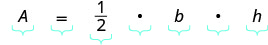 |
| Substitute in the given information. | 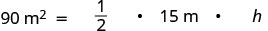 |
| Step 5. Solve the equation. |
|
|
Step 6. Check. |
|
| Step 7. Answer the question. | The height of the triangle is 12 meters. |
The triangle properties we used so far apply to all triangles. Now we will look at one specific type of triangle—a right triangle. A right triangle has one angle, which we usually mark with a small square in the corner.
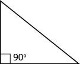
One angle of a right triangle measures What is the measure of the third angle?
Solution
Solution
| Step 1. Read the problem. Draw the figure and label it with the given information. | 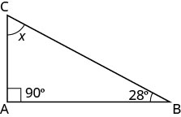 |
| Step 2. Identify what you are looking for. | the measure of an angle |
| Step 3. Name. Choose a variable to represent it. | Let the measure of an angle. |
| Step 4. Translate. | |
| Write the appropriate formula and substitute. | |
| Step 5. Solve the equation. | |
|
Step 6. Check. |
|
| Step 7. Answer the question. | The measure of the third angle is 62°. |
In the examples we have seen so far, we could draw a figure and label it directly after reading the problem. In the next example, we will have to define one angle in terms of another. We will wait to draw the figure until we write expressions for all the angles we are looking for.
The measure of one angle of a right triangle is 20 degrees more than the measure of the smallest angle. Find the measures of all three angles.
Solution
Solution
| Step 1. Read the problem. | |
| Step 2. Identify what you are looking for. | the measures of all three angles |
| Step 3. Name. Choose a variable to represent it. |
Let angle. angle angle (the right angle) |
| Draw the figure and label it with the given information | 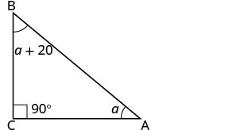 |
| Step 4. Translate | |
| Write the appropriate formula. Substitute into the formula. |
|
| Step 5. Solve the equation. |
55 90 third angle |
|
Step 6. Check. |
|
| Step 7. Answer the question. | The three angles measure 35°, 55°, and 90°. |
Use the Pythagorean Theorem
We have learned how the measures of the angles of a triangle relate to each other. Now, we will learn how the lengths of the sides relate to each other. An important property that describes the relationship among the lengths of the three sides of a right triangle is called the Pythagorean Theorem. This theorem has been used around the world since ancient times. It is named after the Greek philosopher and mathematician, Pythagoras, who lived around 500 BC.
Before we state the Pythagorean Theorem, we need to introduce some terms for the sides of a triangle. Remember that a right triangle has a angle, marked with a small square in the corner. The side of the triangle opposite the angle is called the hypotenuse and each of the other sides are called legs.
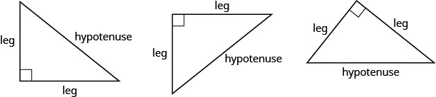
The Pythagorean Theorem tells how the lengths of the three sides of a right triangle relate to each other. It states that in any right triangle, the sum of the squares of the lengths of the two legs equals the square of the length of the hypotenuse. In symbols we say: in any right triangle, where are the lengths of the legs and is the length of the hypotenuse.
Writing the formula in every exercise and saying it aloud as you write it, may help you remember the Pythagorean Theorem.
To solve exercises that use the Pythagorean Theorem, we will need to find square roots. We have used the notation and the definition:
If then for
For example, we found that is 5 because
Because the Pythagorean Theorem contains variables that are squared, to solve for the length of a side in a right triangle, we will have to use square roots.
Use the Pythagorean Theorem to find the length of the hypotenuse shown below.
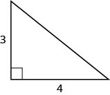
Solution
Solution
| Step 1. Read the problem. | |
| Step 2. Identify what you are looking for. | the length of the hypotenuse of the triangle |
|
Step 3. Name. Choose a variable to represent it. Label side c on the figure. |
Let c = the length of the hypotenuse. 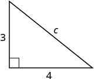 |
| Step 4. Translate. | |
| Write the appropriate formula. | |
| Substitute. | |
| Step 5. Solve the equation. | |
| Simplify. | |
| Use the definition of square root. | |
| Simplify. | |
|
Step 6. Check. 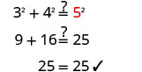 |
|
| Step 7. Answer the question. | The length of the hypotenuse is 5. |
Use the Pythagorean Theorem to find the length of the leg shown below.
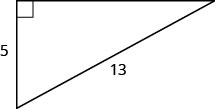
Solution
Solution
| Step 1. Read the problem. | ||
| Step 2. Identify what you are looking for. | the length of the leg of the triangle | |
| Step 3. Name. Choose a variable to represent it. | Let b = the leg of the triangle. | |
| Lable side b. | 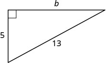 |
|
| Step 4. Translate | ||
| Write the appropriate formula. | ||
| Substitute. | ||
| Step 5. Solve the equation. | ||
| Isolate the variable term. | ||
| Use the definition of square root. | ||
| Simplify. | ||
|
Step 6. Check. 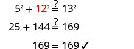 |
||
| Step 7. Answer the question. | The length of the leg is 12. |
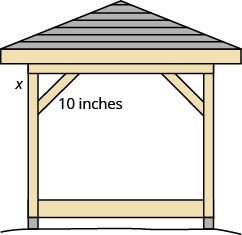
Kelvin is building a gazebo and wants to brace each corner by placing a piece of wood diagonally as shown above.
If he fastens the wood so that the ends of the brace are the same distance from the corner, what is the length of the legs of the right triangle formed? Approximate to the nearest tenth of an inch.
Solution
Solution
| Step 1. Read the problem. | |
| Step 2. Identify what we are looking for. | the distance from the corner that the bracket should be attached |
| Step 3. Name. Choose a variable to represent it. | Let the distance from the corner. |
|
Step 4. Translate Write the appropriate formula and substitute. |
|
|
Step 5. Solve the equation.
Isolate the variable. Use the definition of square root. Simplify. Approximate to the nearest tenth. |
|
|
Step 6. Check.
|
|
| Step 7. Answer the question. | Kelvin should fasten each piece of wood approximately 7.1" from the corner. |
Solve Applications Using Rectangle Properties
You may already be familiar with the properties of rectangles. Rectangles have four sides and four right angles. The opposite sides of a rectangle are the same length. We refer to one side of the rectangle as the length, L, and its adjacent side as the width, W.
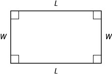
The distance around this rectangle is or This is the perimeter, P, of the rectangle.
What about the area of a rectangle? Imagine a rectangular rug that is 2-feet long by 3-feet wide. Its area is 6 square feet. There are six squares in the figure.
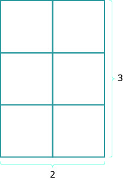
The area is the length times the width.
The formula for the area of a rectangle is
The length of a rectangle is 32 meters and the width is 20 meters. What is the perimeter?
Solution
Solution
|
Step 1. Read the problem. Draw the figure and label it with the given information. |
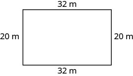 |
| Step 2. Identify what you are looking for. | the perimeter of a rectangle |
| Step 3. Name. Choose a variable to represent it. | Let P = the perimeter. |
| Step 4. Translate. | |
| Write the appropriate formula. | 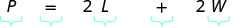 |
| Substitute. | 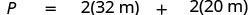 |
| Step 5. Solve the equation. |
|
|
Step 6. Check. |
|
| Step 7. Answer the question. | The perimeter of the rectangle is 104 meters. |
The area of a rectangular room is 168 square feet. The length is 14 feet. What is the width?
Solution
Solution
|
Step 1. Read the problem. Draw the figure and label it with the given information. |
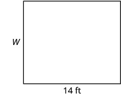 |
| Step 2. Identify what you are looking for. | the width of a rectangular room |
| Step 3. Name. Choose a variable to represent it. | Let W = the width. |
| Step 4. Translate. | |
| Write the appropriate formula. | |
| Substitute. | |
| Step 5. Solve the equation. |
|
|
Step 6. Check. 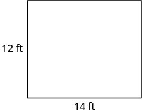 |
|
| Step 7. Answer the question. | The width of the room is 12 feet. |
Find the length of a rectangle with perimeter 50 inches and width 10 inches.
Solution
Solution
|
Step 1. Read the problem. Draw the figure and label it with the given information. |
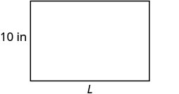 |
| Step 2. Identify what you are looking for. | the length of the rectangle |
| Step 3. Name. Choose a variable to represent it. | Let L = the length. |
| Step 4. Translate. | |
| Write the appropriate formula. | |
| Substitute. | |
| Step 5. Solve the equation. |
|
|
Step 6. Check. 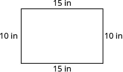 |
|
| Step 7. Answer the question. | The length is 15 inches. |
We have solved problems where either the length or width was given, along with the perimeter or area; now we will learn how to solve problems in which the width is defined in terms of the length. We will wait to draw the figure until we write an expression for the width so that we can label one side with that expression.
The width of a rectangle is two feet less than the length. The perimeter is 52 feet. Find the length and width.
Solution
Solution
| Step 1. Read the problem. | |
| Step 2. Identify what you are looking for. | the length and width of a rectangle |
|
Step 3. Name. Choose a variable to represent it. Since the width is defined in terms of the length, we let L = length. The width is two feet less than the length, so we let L − 2 = width. |
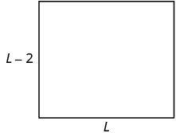 ft |
| Step 4. Translate. | |
| Write the appropriate formula. The formula for the perimeter of a rectangle relates all the information. | |
| Substitute in the given information. | |
| Step 5. Solve the equation. | |
| Combine like terms. | |
| Add 4 to each side. | |
| Divide by 4. |
The length is 14 feet. |
| Now we need to find the width. | The width is . The width is 12 feet. |
|
Step 6. Check. Since , this works! 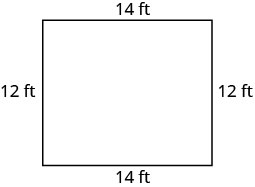 |
|
| Step 7. Answer the question. | The length is 14 feet and the width is 12 feet. |
The length of a rectangle is four centimeters more than twice the width. The perimeter is 32 centimeters. Find the length and width.
Solution
Solution
| Step 1. Read the problem. | |
| Step 2. Identify what you are looking for. | the length and the width |
| Step 3. Name. Choose a variable to represent the width. | |
| The length is four more than twice the width. |
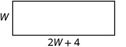 |
| Step 4. Translate | |
| Write the appropriate formula. | |
| Substitute in the given information. | |
| Step 5. Solve the equation. |
12 The length is 12 cm. |
|
Step 6. Check. 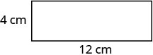 |
|
| Step 7. Answer the question. | The length is 12 cm and the width is 4 cm. |
The perimeter of a rectangular swimming pool is 150 feet. The length is 15 feet more than the width. Find the length and width.
Solution
Solution
|
Step 1. Read the problem. Draw the figure and label it with the given information. |
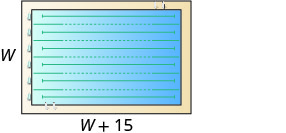 ft |
| Step 2. Identify what you are looking for. | the length and the width of the pool |
|
Step 3. Name. Choose a variable to represent the width. The length is 15 feet more than the width. |
|
| Step 4. Translate | |
| Write the appropriate formula. | |
| Substitute. | |
| Step 5. Solve the equation. |
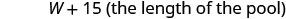 |
|
Step 6. Check. |
|
| Step 7. Answer the question. | The length of the pool is 45 feet and the width is 30 feet. |
Key Concepts
-
Problem-Solving Strategy for Geometry Applications
- Read the problem and make all the words and ideas are understood. Draw the figure and label it with the given information.
- Identify what we are looking for.
- Name what we are looking for by choosing a variable to represent it.
- Translate into an equation by writing the appropriate formula or model for the situation. Substitute in the given information.
- Solve the equation using good algebra techniques.
- Check the answer in the problem and make sure it makes sense.
- Answer the question with a complete sentence.
-
Triangle Properties For
Angle measures:
- The Pythagorean Theorem In any right triangle, where c is the length of the hypotenuse and a and b are the lengths of the legs.
-
Properties of Rectangles
- Rectangles have four sides and four right (90°) angles.
- The lengths of opposite sides are equal.
- The perimeter of a rectangle is the sum of twice the length and twice the width: The area of a rectangle is the length times the width:
Practice Makes Perfect
Solving Applications Using Triangle Properties
In the following exercises, solve using triangle properties.
The measures of two angles of a triangle are 26 and 98 degrees. Find the measure of the third angle.
Solution
56 degrees
The measures of two angles of a triangle are 61 and 84 degrees. Find the measure of the third angle.
The measures of two angles of a triangle are 105 and 31 degrees. Find the measure of the third angle.
Solution
44 degrees
The measures of two angles of a triangle are 47 and 72 degrees. Find the measure of the third angle.
The perimeter of a triangular pool is 36 yards. The lengths of two sides are 10 yards and 15 yards. How long is the third side?
Solution
11 feet
A triangular courtyard has perimeter 120 meters. The lengths of two sides are 30 meters and 50 meters. How long is the third side?
If a triangle has sides 6 feet and 9 feet and the perimeter is 23 feet, how long is the third side?
Solution
8 feet
If a triangle has sides 14 centimeters and 18 centimeters and the perimeter is 49 centimeters, how long is the third side?
A triangular flag has base one foot and height 1.5 foot. What is its area?
Solution
0.75 sq. ft.
A triangular window has base eight feet and height six feet. What is its area?
What is the base of a triangle with area 207 square inches and height 18 inches?
Solution
23 inches
What is the height of a triangle with area 893 square inches and base 38 inches?
One angle of a right triangle measures 33 degrees. What is the measure of the other small angle?
Solution
57
One angle of a right triangle measures 51 degrees. What is the measure of the other small angle?
One angle of a right triangle measures 22.5 degrees. What is the measure of the other small angle?
Solution
67.5
One angle of a right triangle measures 36.5 degrees. What is the measure of the other small angle?
The perimeter of a triangle is 39 feet. One side of the triangle is one foot longer than the second side. The third side is two feet longer than the second side. Find the length of each side.
Solution
13 ft., 12 ft., 14 ft.
The perimeter of a triangle is 35 feet. One side of the triangle is five feet longer than the second side. The third side is three feet longer than the second side. Find the length of each side.
One side of a triangle is twice the shortest side. The third side is five feet more than the shortest side. The perimeter is 17 feet. Find the lengths of all three sides.
Solution
3 ft., 6 ft., 8 ft.
One side of a triangle is three times the shortest side. The third side is three feet more than the shortest side. The perimeter is 13 feet. Find the lengths of all three sides.
The two smaller angles of a right triangle have equal measures. Find the measures of all three angles.
Solution
The measure of the smallest angle of a right triangle is 20° less than the measure of the next larger angle. Find the measures of all three angles.
The angles in a triangle are such that one angle is twice the smallest angle, while the third angle is three times as large as the smallest angle. Find the measures of all three angles.
Solution
The angles in a triangle are such that one angle is 20° more than the smallest angle, while the third angle is three times as large as the smallest angle. Find the measures of all three angles.
Use the Pythagorean Theorem
In the following exercises, use the Pythagorean Theorem to find the length of the hypotenuse.
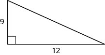
Solution
15
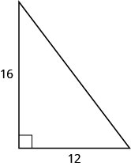
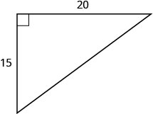
Solution
25
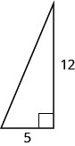
In the following exercises, use the Pythagorean Theorem to find the length of the leg. Round to the nearest tenth, if necessary.
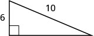
Solution
8
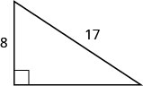
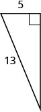
Solution
12
Solution
10.2
Solution
9.8
In the following exercises, solve using the Pythagorean Theorem. Approximate to the nearest tenth, if necessary.
A 13-foot string of lights will be attached to the top of a 12-foot pole for a holiday display, as shown below. How far from the base of the pole should the end of the string of lights be anchored?
Solution
5 feet
Pam wants to put a banner across her garage door, as shown below, to congratulate her son for his college graduation. The garage door is 12 feet high and 16 feet wide. How long should the banner be to fit the garage door?
Chi is planning to put a path of paving stones through her flower garden, as shown below. The flower garden is a square with side 10 feet. What will the length of the path be?
Solution
14.1 feet
Brian borrowed a 20 foot extension ladder to use when he paints his house. If he sets the base of the ladder 6 feet from the house, as shown below, how far up will the top of the ladder reach?
Solve Applications Using Rectangle Properties
In the following exercises, solve using rectangle properties.
The length of a rectangle is 85 feet and the width is 45 feet. What is the perimeter?
Solution
260 feet
The length of a rectangle is 26 inches and the width is 58 inches. What is the perimeter?
A rectangular room is 15 feet wide by 14 feet long. What is its perimeter?
Solution
58 feet
A driveway is in the shape of a rectangle 20 feet wide by 35 feet long. What is its perimeter?
The area of a rectangle is 414 square meters. The length is 18 meters. What is the width?
Solution
23 meters
The area of a rectangle is 782 square centimeters. The width is 17 centimeters. What is the length?
The width of a rectangular window is 24 inches. The area is 624 square inches. What is the length?
Solution
26 inches
The length of a rectangular poster is 28 inches. The area is 1316 square inches. What is the width?
Find the length of a rectangle with perimeter 124 and width 38.
Solution
24
Find the width of a rectangle with perimeter 92 and length 19.
Find the width of a rectangle with perimeter 16.2 and length 3.2.
Solution
4.9
Find the length of a rectangle with perimeter 20.2 and width 7.8.
The length of a rectangle is nine inches more than the width. The perimeter is 46 inches. Find the length and the width.
Solution
16 in., 7 in.
The width of a rectangle is eight inches more than the length. The perimeter is 52 inches. Find the length and the width.
The perimeter of a rectangle is 58 meters. The width of the rectangle is five meters less than the length. Find the length and the width of the rectangle.
Solution
17 m, 12 m
The perimeter of a rectangle is 62 feet. The width is seven feet less than the length. Find the length and the width.
The width of the rectangle is 0.7 meters less than the length. The perimeter of a rectangle is 52.6 meters. Find the dimensions of the rectangle.
Solution
13.5 m length, 12.8 m width
The length of the rectangle is 1.1 meters less than the width. The perimeter of a rectangle is 49.4 meters. Find the dimensions of the rectangle.
The perimeter of a rectangle is 150 feet. The length of the rectangle is twice the width. Find the length and width of the rectangle.
Solution
50 ft., 25 ft.
The length of a rectangle is three times the width. The perimeter of the rectangle is 72 feet. Find the length and width of the rectangle.
The length of a rectangle is three meters less than twice the width. The perimeter of the rectangle is 36 meters. Find the dimensions of the rectangle.
Solution
7 m width, 11 m length
The length of a rectangle is five inches more than twice the width. The perimeter is 34 inches. Find the length and width.
The perimeter of a rectangular field is 560 yards. The length is 40 yards more than the width. Find the length and width of the field.
Solution
160 yd., 120 yd.
The perimeter of a rectangular atrium is 160 feet. The length is 16 feet more than the width. Find the length and width of the atrium.
A rectangular parking lot has perimeter 250 feet. The length is five feet more than twice the width. Find the length and width of the parking lot.
Solution
85 ft., 40 ft.
A rectangular rug has perimeter 240 inches. The length is 12 inches more than twice the width. Find the length and width of the rug.
Everyday Math
Christa wants to put a fence around her triangular flowerbed. The sides of the flowerbed are six feet, eight feet and 10 feet. How many feet of fencing will she need to enclose her flowerbed?
Solution
240 feet
Jose just removed the children’s playset from his back yard to make room for a rectangular garden. He wants to put a fence around the garden to keep out the dog. He has a 50 foot roll of fence in his garage that he plans to use. To fit in the backyard, the width of the garden must be 10 feet. How long can he make the other length?
Writing Exercises
If you need to put tile on your kitchen floor, do you need to know the perimeter or the area of the kitchen? Explain your reasoning.
Solution
area; answers will vary
If you need to put a fence around your backyard, do you need to know the perimeter or the area of the backyard? Explain your reasoning.
Look at the two figures below.
- ⓐ Which figure looks like it has the larger area?
- ⓑ Which looks like it has the larger perimeter?
- ⓒ Now calculate the area and perimeter of each figure.
- ⓓ Which has the larger area?
- ⓔ Which has the larger perimeter?
Solution
ⓐ Answers will vary.
ⓑ Answers will vary.
ⓒ Answers will vary.
ⓓ The areas are the same.
ⓔ The 2x8 rectangle has a larger perimeter than the 4x4 square.
Write a geometry word problem that relates to your life experience, then solve it and explain all your steps.
Self Check
ⓐ After completing the exercises, use this checklist to evaluate your mastery of the objectives of this section.
ⓑ What does this checklist tell you about your mastery of this section? What steps will you take to improve?